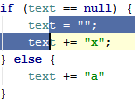
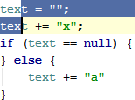
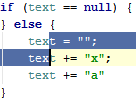

The Code | Move Statement Up/Down action is useful for reorganizing the code lines in your file, e.g., for bringing a variable declaration to the variable usage.
Select a code fragment and press &shortcut:MoveStatementUp; or &shortcut:MoveStatementDown;. When nothing is selected, the line at the cursor will be moved.
Before:

After moving the lines up:

After moving the lines down:
